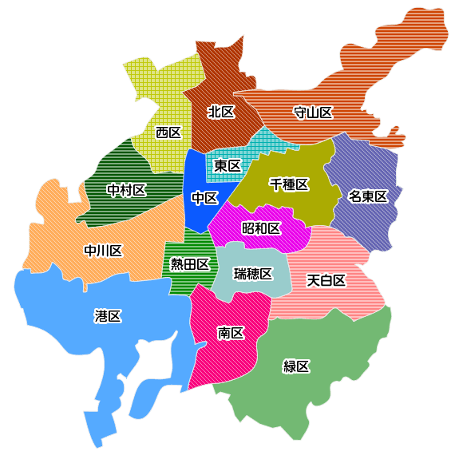

調べたい地域をクリックしてください
名古屋市北部
↓
バンテリンドーム
愛知を本拠地とする中日ドラゴンズのホームグラウンド。地上6階建てのドーム型室内野球場で、ドラゴンズ公式戦では一般席のほか、4名1セットのプライム･ボックス席、2名1セットのプライム・ツイン席など、さまざまなスタイルで観戦が楽しめます。プロ野球以外では高校野球や、コンサート・イベント会場としても使用されています。
| アクセス | 【電車】地下鉄名城線・ゆとりーとライン「ナゴヤドーム前矢田」駅より徒歩約5分 【車】名古屋高速2号東山線「春岡」出口または「吹上東」出口より約15分 |
|---|---|
| 駐車場 | あり（有料） 普通車 前売 2,500円／1回、当日 3,000円／１回 イベントの開催されない日1,000円/1回 ※前売料金の適用は事前決済に限ります。 |
| 詳細 | バンテリンドーム公式ページ |
東谷山フルーツパーク
標高約198m、自然豊かな東谷山の麓に位置する「東谷山フルーツパーク」。ナシやリンゴ、ブドウ、アンズなど約17種類の果樹園や、約100種類もの熱帯・亜熱帯地方のめずらしい果樹が見られる温室、果物に関するさまざまな展示を行う展示室など、果物について楽しみながら学べる施設がそろいます。園内で採れた新鮮な果物が買えるマルシェは大人気！ナチュラルテイストのテラスでは、果物を使ったメニューをいただけます。
| 営業日 | 9:00～16:30 |
|---|---|
| 定休日 | 毎週月曜（祝日の場合は翌平日休）、年末年始（12/29〜1/3） |
| 料金 | 無料 ※世界の熱帯果樹温室は大人 300円、中学生以下無料 |
| 駐車場 | あり（無料） ※イベント期間中のみ有料 |
| 詳細 | 東谷山フルーツパーク公式ページ |
折りたたむ
↑
名古屋市中部
↓
名古屋城
1612(慶長17)年に築城された名古屋のシンボル。戦災で焼失しましたが、1959（昭和34）年には、金のシャチをいただく五層の大天守閣と小天守閣が再建。土日祝には、全国の武将隊ブームの先駆けである「名古屋おもてなし武将隊」の演武が行われるほか、『城フェス（じょうふぇす）』と題した魅力的なイベントも随時開催されます。
| 営業時間 | 9:00～16:30（西の丸御蔵城宝館・本丸御殿入場は～16:00） |
|---|---|
| 料金 | 観覧料:大人500円、中学生以下無料、名古屋市内在住65歳以上100円 |
| アクセス | 【電車】地下鉄名城線「名古屋城」駅7番出口より徒歩約5分
【車】名古屋高速都心環状線「丸の内」出口より約5分 |
| 駐車場 | あり（有料）
普通車180円／30分、自動二輪100円／30分 |
| 詳細 | 名古屋城公式ページ |
金シャチ横丁
2018年3月にオープンしたグルメストリート。名古屋城に隣接する2つのエリアからなり、正門側の「義直ゾーン」では味噌煮込みうどんやひつまぶしといったなごやめしの王道メニューが、東門側の「宗春ゾーン」ではスイーツやテイクアウトメニューなど新進気鋭のグルメがそれぞれ楽しめます。
| 営業時間 | 義直ゾーン：10:30～名古屋城閉門30分後まで
宗春ゾーン：11:00～22:00（土日祝は10:30～） ※季節やイベント、また店舗ごとによって多少営業時間は異なります。詳細は店舗ページをご確認いただくか、各店舗にお問い合わせください。 |
|---|---|
| アクセス | 【電車・バス】各線「名古屋」駅より、なごや観光ルートバス・メーグル乗車「名古屋城」停下車すぐ（義直ゾーン）
【電車】地下鉄名城線 「名古屋城」駅下車7番出口すぐ（宗春ゾーン） 【車】名古屋高速都心環状線「丸の内」出口より約5分 |
| 駐車場 | なし |
| 詳細 | 金シャチ横丁公式ページ |
中部電力MIRAI TOWER
昭和29（1954）年に建てられた日本最古の集約電波塔。名古屋の中心街･栄の久屋大通公園にあり、地上100メートルの展望台からは市内をはじめ知多半島や御岳山も一望できます。初夏・夏まつり・お月見・冬バージョンなど1年を通していくつかのプロジェクションマッピングを実施しています。
| 営業時間 | 【平日・日曜】10:00～21:00（最終入場20:40）、【土曜】10:00～21:40（最終入場21:20）、 無休（メンテナンス休業あり） |
|---|---|
| 料金 | 入館料：大人(高校生以上)1,300円、小人(小・中学生)800円 |
| アクセス | 【電車】地下鉄名城線・桜通線「久屋大通」駅4B出口よりすぐ
【車】名古屋高速都心環状線「錦橋」出口より約7分 |
| 駐車場 | なし |
| 詳細 | 中部電力MIRAI TOWER 公式ページ |
オアシス21
名古屋の中心街・栄にあるフォトジェニックな自然公園。船を象ったガラスの大屋根「水の宇宙船」が空に浮かび、地上14メートルから見下ろす景色と、船上の流水を眺めながら空中散歩が楽しめます。地下の「銀河の広場」では食事や買い物が楽しめ、冬期は氷じゃないスケートリンク「豊田合成リンク」も登場。
| 営業時間 | 水の宇宙船：10:00～21:00
銀河の広場：6:00～23:00 |
|---|---|
| アクセス | 【電車】地下鉄東山線・名城線「栄」駅下車、徒歩すぐ
【車】名古屋高速都心環状線「東新町」出口より約5分 |
| 駐車場 | なし |
| 詳細 | オアシス21 公式サイト |
名古屋市科学館
内径35メートルの世界最大のプラネタリウムドーム「ブラザーアース」を備えた総合科学館。最新技術で限りなく本物に近い星空を楽しめるのはもちろん、マイナス30度の部屋でオーロラ映像を体験する装置や、高さ9メートルの人工竜巻の体験など、数々の大型展示も魅力的。太陽光発電や壁面緑化など、建物自体も展示装置となっています。
| 営業時間 | 9:30～17:00(最終入館は16:30）※プラネタリウムの夜間投影等の場合、観覧券の発売は16:30まで
月曜（祝日の場合は翌日）・第3金曜（祝日の場合は第4金曜）・12/29～1/3休 |
|---|---|
| 料金 | 展示とプラネタリウム観覧料
大人800円、大学・高校生500円、中学生以下無料、名古屋市在住の65歳以上200円 |
| アクセス | 【電車】地下鉄東山線・鶴舞線「伏見」駅4・5番出口より徒歩約5分 |
| 駐車場 | あり（有料）
180円／30分 |
| 詳細 | 名古屋市科学館 公式サイト |
東山動植物園
約60ヘクタールの広さを誇る緑豊かな園内に、動物園、植物園、遊園地、東山スカイタワーが集結する一大レジャースポット。動物園では話題のイケメンゴリラ「シャバーニ」や世界のメダカまで約500種を飼育しています。自然林を生かした植物園内では、万葉の散歩道や薬草の道、東海の森などテーマに沿った散策コースも整備されています。
| 営業時間 | 9:00～16:50（入園は16:30まで）※東山スカイタワーは～21:30（入館は21:00まで）
月曜（祝日の場合は翌平日）・12/29～1/1は休園 |
|---|---|
| 料金 | 入園料：大人(高校生以上)：500円、中学生以下無料、名古屋市在住の65歳以上の方100円
東山スカイタワー：300円 動植物園、スカイタワー共通券：大人640円、中学生以下無料、名古屋市在住の65歳以上の方160円 |
| アクセス | 【電車】地下鉄東山線「東山公園」駅3番出口より徒歩約3分
【車】東名高速道路「名古屋」ICより約15分 |
| 駐車場 | あり（有料）
乗用車800円、自動二輪400円 |
| 詳細 | 東山動植物園 公式ページ |
折りたたむ
↑
名古屋市南部
↓
熱田神宮
三種の神器の一つ、草薙神剣を祭神とし、伊勢の神宮につぐ大宮として全国的に知られる古社。約6万坪の境内は、樹齢千年を超えるという楠が生い茂り、宝物館には6千余点もの奉納品が収蔵展示されています。本殿の裏に続く“こころの小径”沿いには、熱田大神の「荒魂」が祀られる一之御前神社もあり、ぜひ参拝したいスポットです。
| 営業時間 | 宝物館：9:00～16:30（最終入館16:00）
毎週木曜とその前日・12/25～12/31休 |
|---|---|
| アクセス | 【電車】名鉄名古屋本線「神宮前」駅より徒歩約3分
【車】名古屋高速3号大高線「呼続」出口より約5分 |
| 駐車場 | あり |
| 詳細 | 熱田神宮 公式ページ |
名古屋港水族館
「南極への旅」をテーマにした南館と、「35億年はるかなる旅」をテーマにした北館で構成。約3,000人収容の日本最大級のプールでは、レベルが高いと評判のシャチやイルカのパフォーマンスが必見です。ベルーガの繁殖や、人工雪を降らせて?2度をキープするペンギン水槽、産卵用砂浜のあるウミガメ水槽など、日本初の試みも充実。
| 営業時間 | 9:30～17:30（冬期～17:00、GW・夏休み期間中～20:00）※入館は閉館の1時間前まで
月曜（休日の場合翌日）休、臨時休館あり ※GW・7月～9月・年末年始・春休みは無休 |
|---|---|
| 料金 | 入館料：大人・高校生2,030円、小中学生1,010円、幼児（4歳以上）500円 |
| アクセス | 【電車】地下鉄名港線「名古屋港」駅3番出口より徒歩約5分
【車】伊勢湾岸自動車道「名港中央」ICより約15分 |
| 駐車場 | あり（有料）
100円／30分 |
| チケット | 名古屋港水族館の入場チケット購入はこちら【楽天ポイントが貯まる・使える】 |
| 詳細 | 名古屋港水族館 公式ページ |
レゴランドR・ジャパン
2017年4月、金城ふ頭にオープン。2～12歳の子供と家族を対象にした屋外型テーマパーク。テーマの異なる7つのエリアに40を超えるアトラクションやショーがそろい、乗り物に乗ったり、レゴRモデルに触れたり作ったりと、レゴRの世界感を満喫できます。1,000万個以上のレゴRブロックを使って再現した国内の景色や街並みも必見。
| 営業時間 | 10:00～17:00（時期により異なる）、不定休 |
|---|---|
| 料金 | 1DAYパスポート：大人（19歳以上）4,500円、子供（3～18歳）3,300円 |
| アクセス | 【電車】あおなみ線「金城ふ頭」駅より徒歩すぐ
【車】伊勢湾岸自動車道「名港中央」ICより約2分 |
| 駐車場 | なし（金城ふ頭立体駐車場を利用） |
| 詳細 | レゴランドR・ジャパン 公式ページ |
リニア・鉄道館
東海旅客鉄道が2011年に金城ふ頭に開館した、鉄道に関する事物を展示する博物館。東海道新幹線を中心に、在来線から超電導リニアまでの車両展示を通じて、“高速鉄道技術”の進歩を紹介しています。鉄道ジオラマや、新幹線・在来線の運転シミュレータなどを体験できるほか、限定弁当や駅弁が手に入るデリカステーションがあるのも魅力。
| 営業時間 | 10:00～17:30（最終入館は17:00まで）
火曜（祝日の場合は翌日）・12/28～1/1休 ※春休み、GW、夏休み等は無休 |
|---|---|
| 料金 | 入館料：大人1,000円、小中高生500円、幼児（3歳以上）200円 |
| アクセス | 【電車】あおなみ線「金城ふ頭」駅より徒歩約2分
【車】伊勢湾岸自動車道「名港中央」ICより約1分 |
| 駐車場 | なし（金城ふ頭立体駐車場を利用） |
| 詳細 | リニア・鉄道館 公式サイト |
邦和スポーツランド スケート場
広々としたアイスリンク（国際規格適合）で、月に一度、季節に合わせたイベントを開催しており、年中利用できます。ご家族、友人とのお出掛けやカップルのデートにおすすめです。一般利用に加え、スケート教室も充実しています。
| 営業時間 | 曜日により異なります。詳細をご確認ください |
|---|---|
| 料金 | 入館料：大人1,400円、3歳～中学生800円、リンクサイドのみの利用300円 |
| アクセス | 【電車】地下鉄名港線「港区役所」駅より徒歩約2分
【車】国道23号線「築地口」ICより約4分 ※道路状況により所要時間は変わります |
| 駐車場 | あり |
| 詳細 | 邦和スポーツランド 公式ページ |
白鳥庭園
約3.7ヘクタールの広大な池泉回遊式日本庭園。築山を御嶽山、流れを木曽川、池を伊勢湾に見立てた「水の物語」をテーマとした庭園で、中部地方の地形がモチーフになっています。庭園のほぼ中央に位置する本格的な数寄屋建築の茶室「清羽亭」が池に映り、豊かな自然と織りなす光景は圧巻。一年を通してさまざまな草花が咲き誇り、春夏の新緑、秋の紅葉、冬の雪景色と、四季折々の景観が楽しめるのも魅力です。
| 営業時間 | 9:00〜17:00（最終入園 16:30） |
|---|---|
| 定休日 | 毎週月曜（祝日の場合は翌平日休）、年末年始（12/29〜1/3） |
| 料金 | 高校生以上 300円、中学生以下無料 |
| アクセス | 【電車】地下鉄名城線「熱田神宮西」駅より徒歩約10分
【車】名古屋高速道路「六番北IC」より約10分 |
| 駐車場 | あり（有料）
普通車 300円／1回 |
| 詳細 | 白鳥庭園 公式サイト |
折りたたむ
↑
名古屋市の地図
参考サイト↓
https://travel.rakuten.co.jp/mytrip/ranking/spot-nagoya